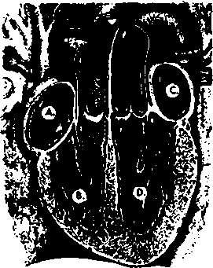

THE MISSION OF THIS JOURNAL
Newc Bounces that are able to keep you awake to the vital issues of our tknee must be unfettered by censorship and selfish interests. ‘ Awoke 1” has no fetters. It recognizes facts, faces facts, is free to publish facts. It is not bound by political ambitions or obligations; it is unhampered by advertisers whose toes must n^t be troodenon; it is unprejudiced by traditional creeds. This journal keeps Itself free that it may speak freely to you. But it does not abuse its freedom. It maintains integrity to truth.
“Awake I” uses the regular news channels, but is not dependent on them. Its own correspondents are on all continents, in scores of nations. From the four corners of the earth their uncensored, on-the*scenes reports come to you through these columns. This journal’s viewpoint is not narrow, but is international. It is read in many nations, in many languages, by persons of all ages. Through its pages many fields of knowledge pass in review—government, commerce, religion, history, geography» science, social conditions, natural wonders—why, its cover* age is as broad as the earth and as high as the heavens.
“Awake!” pledges itself io righteous principles, to exposing hidden foes and subtle dangers, to championing freedom for all, to comforting mourners and strengthening those disheartened by the failures of a delinquent world, reflecting sure hope for the establishment of a right* eous New VVtrld.
Get acquainted with “Awake!” Keep awake by reading “Awake!”
ruBtiaiiRu Semimonthly By WATCHTOWER BIBLE AND TRACT SOCIETY, INC.
117 Adding Street Brooklyn 1, N, Y,, U. S. A,
N. H. Ksofiff, President SciTBKt Seeret&rtf
Fiv« aenta a copy Ona dollar a year
Rmlttuai thould be scut U office tn your country in cunqlHintt with retfulitlom to atiartatn delivery ftwcej. Bemilunwi ate KHpted at BrooM^U tram countries where no affie& Is located, by InteraiUvirt money orttjr only, gubscrtatkii ratal Id different eounlrlrt ire here staled In local currency.
Motia ef tipIritiM (with renewal blink) la rm at ItHt two liuies before lufaicrlpUnn expUw,
Ckstip of addrm when sent lo our rflte Haj he sipectcd cfftctife within one month. Send your old an well as new address.
Offices Yearly Rubscrijrtion Bate
America, U.S., 117 Adarc st, Brooklyn 1, N.Y. <1 Aaitralia. 11 Beresford Bd., Strrt&fleJd, N.S.ff, On Canada, 40 IrwfT) Are., Toronto 5, Ontario $1 £n|tettdb 34 Craven Terrace, I/mdon, W. 2 fi* SDrtft Africa, (323 Banton Houae, Capo Town 5a
Entered ta second-elm matter at Biwklyn, N. Y., Act of March 3, 1870. Printed in U. Sh A.
ENTS
Following the Orthodox Pattern
Many Other Points of Comparison
An “Ism” with a Creeping Influence
Coney Island and Statue of Liberty
Religious Fury Feeds the Flumes in Quebec 16 “Thy Word Is Truth”
Puerto Rico and the Virgin Islands
Heart Trouble and Related Ailments
RUSSIA’S RED RELIGION
Proof that communism is just another false religion
LAST December the public press and radio told how the whole communist world celebrated Stalin's seventieth birthday with the greatest display of gifts, honor and praise ever heaped upon any one man. The satellite countries were not one whit behind the U.S.S.R. in their extravagant words of adoration. In Vienna the occasion was celebrated with “semireligious ceremony". In Hungary the usual Christmas festival was ordered canceled, and in its place an all-out and prolonged celebration of Stalin's hirthday was held, beginning on December 21. In Albania the People’s Assembly voted to erect a statue to “the deity, Joseph Vissarionovich Stalin". Declared Albania’s Premier Hoxha: “The Great Stalin is our people’s glorious savior.’’
The six months and more that have elapsed since then allow thoughtful people an opport unity to now look back and see how that splurge of publicity, and the events surrounding it, fits into the communist picture as a whole. On the surface, and from all outward claims, communism is considered by many people as anything but religious. In fact, the enemies of communism so often proclaim that this particular “ism" is anti- and non-religious. They quickly call to mind the dogma of Karl Marx: “Religion is the opium of the people." But if it is true that communism as practiced today is altogether nonreligious, then how are ive to understand or explain this recent outburst of fanatical deification of Stalin as "the deity”, the “glorious savior”,etc.?
The world is full of religious of various creeds, concepts and colors. Sit down and make a list of all the religions you can think of. Maybe your list will not be so long compared with the thousands that are now practiced, but even at that you will undoubtedly include many "isms” that are commonly referred to by Christendom as "heathen” religions. Now those who hold to such religions do not worship or serve the same Deity you profess to w’orship, us, for example, the multitude of gods ’worshiped by the native tribes of Africa, South America, Asia and the far-flung islands of the South Pacific, Yet you will readily -admit that such strange people do 'worship strange gods, and, hence, practice some sort of demon religion. If, therefore, one takes a broad view of the matter, there should be no difficulty in accepting the fact that communism is just another religion with a different set of gods. The orthodox religions are shocked by the rites of snake worshipers, but you would not call the latter godless. Neither are those who adore Stalin as “the deity'1 and their "glorious savior" godjess. Yes, communism differs from other religions in many respects, but you will be astonished to see the similarity at so many other points of comparison.
Before the parallel is drawn between communism and the great orthodox religions of the world, it is well to look up and have in mind the definition of the word “religion” as found in Webster’s New International Dictionary, Second Edition. On page 2105 "religion” is defined as follows:
1. The service and adoration of God or a god as expressed in forms of worship, in obedience to divino commands, esp. as found in accepted sacred writings or as declared by recognized teachers and in the pursuit of a way of life regarded as incumbent on true believers. . . .
3. Ono of the systems of faith and worship; a form of theism; a religious faith. ....
5. Devotion or fidelity; scrupulous conformity; conscientiousness. ...
8. a. A pursuit, an object of pursuit, a principle, or the like, arousing in one religious convictions and feelings such as great faith, devotion, or fervor, or followed with religious zeal, con.wdemtlousrms.s or fidelity; as, patriotism was to him a religion, b. Acceptance of and devotion to such tin ideal as a standard for ones life.
Following the Orthodox Pattern
Even as every religion has its "faith” or creed, so also has communism. Atheism and materialism are among its “ten commandments” Members of the Communist party, if they are in good standing, must wholeheartedly believe, teach and practice the atheist creed, and a solemn curse or ban handed down by the Communist party is just as fatal as any anathema issued by ecclesiastical authorities of an orthodox church.
A communist preaches that orthodox religion “is the opium of the people”, hut can it he successfully denied that communism is just as potent a drug as any sleep-inducing doctrine peddled by the recognized religious organizations? Injections of the atheistic narcotic into one’s veins is just as intoxicating and benumbing to the reasoning senses, just as freedom-robbing and enslaving to the mind, as any preachment of the churches. Blind and unquestioning belief in the theories, ideologies, philosophies, traditions, superstitions and myths of the party is demanded of all who consecrate their lives to the communist system of faith and worship. George E, Sokolsky once wrote that communists “are more dogmatic than the most bigoted fundamentalist in religion, accepting on faith that the Marxist prognosis must be correct, no matter what the facts may he”.—New York Sun, January 8,1949,
Do the great ecclesiastical institutions exercise domineering influence over the masses in their flocks ? So also does com-munisni. Not a small sect or cult, communism is monstrous in size, dominating the lives of millions. Not a mere hyphenated partnership, or “church and state" rule, communism has swallowed up the state, and the two are as one. Are organized religions of the world intolerant toward other beliefs? So also is communism, In countries behind the “iron curtain" attempts are made by the communists to regiment the churches, forbid and hinder them from carrying on their normal activities, and force them to bow to control by the state. Inside Russia, in the rural sections, practically all churches have been closed to public worship, and many of them have been turned into garages, storage bins for grain, or are being used as schools or museums. This state religion of communism is just as intolerant toward other “isms” as Franco’s Catholic government is toward Protestants.
Do some churches have their confessional with a provision for sin atonement ? So too the communists. Frequently the press reports that some artist, musician or scientist has confessed to “bourgeois” sins and asks forgiveness. Excommunication? Indeed, both churches and the communists use this lash over the backs of their disobedient members. Do churches have their heretics? So also communism has its Titos. Does not the Catholic Church have its inquisitions and torture methods, used whenever possible on those who openly or secretly plot against its rule! Who has riot heard of similar blood purges brought against those accused of being heretic communists t Sueh ordeals by fire are almost as notorious as the medieval Inquisition.
Many Other Points of Comparison
Communism is not behind the other religions "when it comes to a well-disciplined priesthood. For its “college of cardinals” it has its Politburo, beneath which are various categories of lesser functionaries—“archbishops,” "bishops” and “parish priests”—all together composing a formidable hierarchy, headed by its pope, the “infallible” Stalin. This official “clergy” class among communists is well defined, and is separate and distinct from the “laity”, the faceless masses who bear up and support the thin communist crust. Private audiences with papa Joe are as difficult to arrange as those with the pope of Rome. The Cominform together with the secret police, it should be noted, functions with as much efficiency and dispatch in international intrigue as the Society of Jesus, otherwise known as the Jesuits.
Communism also has its “holy cities”, its shrines aud synagogues. Moscow is its Mecca: the Kremlin is its Vatican: and pilgrimages are made to the tombs of its venerated saints and martyrs. On its calendar of “holy days” is the anniversary of Lenin's death, celebrated each year with great religious devotion and reverence. “Holy" May Day is also annually observed with much festivity and to-do, and Christendom’s Easter parades find a counterpart in the May Day parades.
Even as the churches send out their missionaries, so also communism sends out well-trained missionaries and vociferous prophets fired with as much zeal and fervor as any religious zealot. Preaching their “gospel of salvation” to a religion-weary world, they encompass land and sea to make proselytes and converts of whomsoever they may. The theorists and dialecticians of communism are particularly skilled in the art of clever disputation and debate. They even see through some of Christendom’s mysteries, and, like Indian medicine men, they are able to deceive the simple with theif own wonder-working magic. Dr. Harry Emerson Fosdick, noted pastor emeritus of the Riverside church in New York, in observing this powerful competition communism gives the churches, said this:
Communism is a tremendous faith. It has a creed—dialectical materialism—winch its adherents believe in as Christians do the scrip-, tures. It has shrines, pilgrimages, hymns and rituals, and where do we find more energetic missionary work?
The great religions of the world in both Christendom and heathendom have their sacred writings, prayer books and catechisms, as well as their educational institutions and schools for the propagation of their doctrines. Then how does communism differ from them on this point? They too have their “parochial” schools, where young converts are indoctrinated with the tenets and dogmas of the “holy” Communist party. They too have their most “holy writings”. Stalin’s History of the Communist Party, for esample, is drilled into the members as if it were inspired scripture. The works of Lenin and Marx are also considered very sacred. Like Constantine, who called together the ecclesiastical authorities in A.D. 325 for the formation of the Nicene Creed, so also Stalin called together 84 experts for a convocation when a dispute arose over doctrines in a new’ textbook. For nine days these didacticians brooded over the philosophical points in question. The fine threads of atheistic materialism, you know, must be spun with as much cunning and finesse as the gossamer cobwebs of theology.
Columnist Dorothy Thompson, after observing many of these points of similarity, comes to the obvious conclusion that “communism is a secular church”.
In her syndicated newspaper column she says of this "ism”:
It is organized like a church, with an immutable body of faith, a strict and continuous theological discipline (the dialectic), repeated spiritual exercises—confession and atonement —and it has its saints and martyrs. It has its educational, missionary, disciplinary, and propaganda sections, and its militant arm.
In the minds of communists they are the upholders of the only true faith in a world of infidels. They alone are the saved on the way to a terrestrial heaven, carrying weaker humanity with them, while their opponents are on the way to the bottomless pit.
Also taking note of several points of similarity between the radical communist brand of' religion and the more conservative standard brands, Tlir Christian Century magazine says:
Communists scorn such a suggestion, but they can hardly deny that their movement displays most of the familiar appurtenances of a religion. Communism has its saered scriptures, its inspired revelators, its inerrant dogma, its saints, its martyrs, its hagiology, its demonology, its heresy trials, its inquisition, its excommunications, its pope, its ruling hierarchy, its initiatory vows, its consecrated priesthood, its missionaries, its sacred shrines, its proaelyting passion, its apoealyptic future to make up for a grim present.
An “Ism” with a Creeping Influence
Were it not for the fact that communism is essentially and basically a religion it would not be able to penetrate the very fiber of life and saddle itself upon the minds of so many millions, holding them in abject submission. Generals in the Bed army, for example, are reminded that more is required of them than a mere knowledge of military tactics. If they are to remain in the good graces of the communist hierarchy, Red Star, the official army newspaper, says they must study Marxism and Leninism with all diligence, as diligently as a priest studies his breviary. “Even in sports we must learn from J. V. Stalin,” declared a Communist Czech athlete. Into whatsoever this yeasty spirit of fanaticism seeps, even into the various arte and sciences, there one finds the same excessive religious froth of fermentation.
When the Academy of Science met in Bucharest, among the so-called "scientific papers” read were those with the following titles: “J. V. Stalin, Lenin’s Perpetuator in Creating the Theory of the Construction of Socialism”; “J. V. Stalin, Theoretician and Leader of the Fight for Peace and Brotherhood Among Peoples”; “J. V. Stalin Mirrored in the Literature of the Peoples of the World”; “J. V, Stalin, Military Genius of Our Time”; "J. V. Stalin, Teacher and Inspired Leader of the World Proletariat.” This last paper must have been an interesting one if it stuck to its subject, for when it speaks of Stalin as being “inspired” it reaches into the field of religion. And since every communist will quickly admit that Stalin is not inspired of Jehovah God, then there is only one conclusion left: Stahn must be inspired by the “god of this world”, Satan the Devil. A very interesting conclusion. —2 Corinthians 4:4; John 8: 44.
Practically all the Hussian writers of poetry and prose have likewise been inspired to glorify this “great ersatz religion of the century: communism”, as Dorothy Thompson so aptly defines it. Scarcely a novel is published which fails to show in some way the influence of the leader, Stalin. He and his supposed virtues are the subject of thousands of poems. As one poet raved: “Hail our father and teacher [meaning Stalin], the eagle’s glory of the centuries.” Another, crawling on his belly, laments: “On behalf of the people I will bow to the earth to him.”
Composers of musical symphonies and overtures have attempted to immortalize this personification of communism in their compositions. In one way or another national hymns and folk songs extol and praise this atheistic religion to the heavens. Producers and artists of the stage and screen overwork this theme. Canvaspainting artists, too, and the lithographic printers and photographers are kept busy turning out paintings and sculpture works of Lenin and Stalin, and these are worshiped in the same blind pagan fashion as the images of other religions are venerated. Yes, indeed, communism is very much infected with hagiol-atry and idolatry, the worship of saints and idols, and the kindred disease— hero-worship.
So that you may appreciate the fact that this picture is not overdrawn, and in order that you may more fully realize how very devoted communism is to its gods, the following quotation is taken from the communist newspaper Soviet-Art. Concerning Stalin and his influence, it says:
Masters of Soviet art work over this exciting theme with inspiration. Our composers write songs and symphonies about the great Stalin. The image of the genius leader is embodied in the best canvases and sculptures, in the works of the movie art, in theatrical productions, Our people owe the victories in all branches of the national economy, science and culture to the creator of the Constitution of victorious socialism, Comrade Stalin, the great pilot whose firm hand is piloting the Soviet ship of state along the way outlined by the immortal Lenin.—New York Times, Dec. 5, 1949,
Stalin Deified as Gad
A religion as potent and all-embracing as communism, having as it does all the trimmings and phylacteries worn by the other religious organizations of the world, surely needs an “infallible” godhead, Pharaoh of Egypt was hailed as “the good god”; the ruler of the Peruvian Incas was considered “the child of the sun”; the emperor of the ancient Chinese was spoken of as “the son of heaven”; the great Caesars of the Roman Empire were deified. Then why should not a witens wand transform the high Mogul of the communists into a god for their anthill? The communists have their patriarch Marx; they have their embalmed and mummified Lenin; but what they need is a "living Buddha” to give their materialistic religion reality and power. Hende, the recent deification of Stalin as the golden calf or sacred cow of communism.
To make a god out of a shoemaker’s son is a slow, drawn-out affair. First he must have power over the lives of millions. Stalin got this by scheming, clawing and slowly plodding his way up from serfdom to a position among the mighty, not equaled even by Hitler. Great cities have been named after him: Stalingrad, Stalino, Stalinsk, Stalinabad, and others. Mountains and dams and schools bear his name, Even the servile Russian Orthodox Church fell right in line with this god-tuaking program. A headline in the New York Times read: “Stalin Selected by God, Moscow Patriarch Says.”
Next, supernatural powers, abilities and genius surpassing all other men are attributed to him, as, for example, “inspired leader of the world proletariat,” “genius-creator of the friendship of the Soviet peoples,” the "inexhaustible source of creative inspiration in all the arts”, the "shining star”, "inspirer of creation, gladness of life,” the "people’s glorious savior”. Soaring even to greater heights of eulogy, the communist president of Hungary, Szakasits, says that Staliji is so lofty “human eyes can hardly follow” him. The official Soviet newspaper, Pravda, says Stalin is so superhuman “he can survey all humanity and all happenings on earth”. Well, that certainly attempts to exalt him into the high heavens, strives to make him equal to God, as in the case of Satan,—Isaiah 14:12-14.
Communism is even attempting to duplicate the "mother and child” worship that originated with Nimrod and his mother Semiramis on the plains of Shi-nar in the Mesopotamian valley more than 4,000 years ago, and -which today is sponsored by the Roman Catholic Hierarchy. Fostering this mother worship, a Russian novelist wrote on Stalin’s seventieth birthday: “This day, let us transfer ourselves to the suburbs of Tbilisi and with reverent sorrow and ardent gratitude in our hearts silently bend our heads over the sacred remains of a small, modest Georgian woman, the mother who 70 years ago gave the world him who became humanity’s greatest man, our leader and father.”
No single piece of evidence so completely proves that coininiinism is a religion as the extravagant display of worship and devotion heaped upon the deified Stalin on his birthday last December 21. The AP news dispatch, reporting that rank orgy of paganism, said:
Thousands of parcels and crates, trainloads of merchandise, whole exposition halls of trinkets and pictures, factories and socks, books and horses, wines and toys, delicacies and cars were tunneled toward Moscow from the Elbe to China, from the Arctic to the Black Sea. ... No one man conld ever use all the gifts, or read ail the honors. Probably no one man could ever distribute them. For weeks the Communist press and radio have been reporting the rivalry of Communist leaders everywhere to contribute imposing tokens of obeisance. What it was all worth was anyone’s guess, certainly millions of dollars.
Eastern Germany alone sent a -whole mountain of material, a seventy-car train fully loaded with gifts, to the god in Moscow. Pravda devoted its entire twelve pages to recounting the glory of this god. Millions of Bulgarians sent a message of gratitude, and likewise 9,000,000 Czechs signed birthday greetings. Factory workers and farmers pledged themselves to longer hours of work.
Faced with such an array of tangible evidence, all honest persons must admit that communism has become a way of life, a system of faith, a form of worship, a religion, if you please, to which millions of people bow the knee in worship. Many of these people undoubtedly have turned away from the false gods of Christendom and heathendom in bitter disappointment because such have not answered their prayers or brought them salvation. Others, perhaps, have heen fascinated by Russia’s display of power. But, regardless of why one is a communist, let all face up to the fact that this "red” religion, like the orthodox “isms”, is just another demon religion sponsored by the Devil. Its dogmas and teachings, just like the conflicting and confusing creedal doctrines of the others, turn men away from the true God Jehovah.
So while there is still time, in the short remaining time before Armageddon, when communism, together with all other “isms”, will meet its final and complete downfall, abandon this form of creature worship and turn to the true and living God whose name alone is Jehovah, the Giver of every good and perfect gift, thexonly Source of life! Study His Word the Bible. Learn of His purposes. Keep His commandments and live. If you do this, then you too will be able to say, as one writer of the Bible expresses it: “We know that ‘an idol has no real existence,’ and that ‘there is no God but one.’ For although there may be so-called gods in heaven or on earth—as indeed there arc many ‘gods’ and many ‘Jords’—yet for us there is one God, the Father, from whom are all things and for whom we exist, and one Lord, Jesus Christ, through whom are all things and through whom we exist.”—1 Corinthians 8: 4-6, Itev. Stan. Ver.
NEW YORK city is a jungle of brick, stone and steel jutting out of the island rocks upon which it is built Like towering cliffs the skyscrapers push heavenward, leaving yawning chasms at whose bottoms lie the streets of the city. Through these crevices rushes the sea of humanity, to work in the morning, home in the evening, out for entertainment at night. There are about eight million people in this jungle, more than the total number of persons living in Arizona, Colorado, Delaware, Idaho, Maine, Montana, Nevada, New Hampshire, New Mexico, North Dakota, Utah, Vermont and Wyoming.
The ends of the earth are .gathered in the streets of New York, for here are found representative people from nearly every nation on earth. There is Chinatown, with its chop suey and ' curio shops; Little Italy, the oldest and smallest of many Italian districts; Harlem, with its large Negro population; Yorkville, a mixture of Germans, Irish, Czechs and Hungarians; and the lower east side; which has more Jewish residents than any other place in the world. New York is a blend of these and many other nationalities, each clinging to old customs and traditions, and yet mingling the old with the new.
Geographically the city is divided into five boroughs. Of the five only the Bronx is located on the mainland of North America. Brooklyn and Queens are on Long Island, Richmond is better known as Staten Island, and Manhattan is the island purchased from the Indians in
1626 for trinkets valued at $24.00. Today Manhattan is the heart of the world’s second-largest city, the center of its financial, cultural, fashion and entertainment world.
The hustle-bustle, noise and vastness often leave the visitor bewildered. But to the enterprising guest no other city on earth holds the wonders and sights that may be found here. This article will take its readers on a tour of a few of the many sights in Big Town, U. S. A.
Seeing the Sights
Since skyscrapers are the trademark of New York city, lot’s begin with the one that really scrapes the sky, the Empire State Building, at Fifth Avenue and Thirty-fourth street in Manhattan. It rises 1,250 feet, or 102 stories, like a gigantic finger that tickles the clouds as they pass overhead. There are observatories on the 86th and 102d floors, from which you may get a panoramic view of the monarch of American cities. Below you stretch the miles of man-made jungle. There are the cliff-dwellers' apartments jammed tightly together. Rising high and irregularly above these are the commercial buildings. Surrounding you are the Hudson and East rivers, across which stretch numerous bridges linking Manhattan with the rest of the city and with New Jersey. Other connecting links are the many tunnels which burrow beneath the rivers. Lining the waterways are the docks, which handle forty percent of the nation's exports and nearly as large a share of itj imports. Into port
COHiv the great ocean liners like the Queen Mary, Queen Elizabeth and America- bringing visitors from every quarter of the globe- Uptown can be seen the green expanse of Central Park, with its trees, lawns, lakes and recreational facilities, set down practically in the middle, of Manhattan island. If you wish the best view possible, be certain it is a bright, clear day.
Going up Fifth Avenue to Forty-ninth street we come to an unusual group of fifteen buildings forming Rockefeller Center. This '“city within a city" is said to be one of the greatest of modern architectural achievements. A tour of the entire Center is available. The Centene ttes will show you many of the beautifully designed and deeorated buildings: the Lower Plaza, where there is outdoor ice skating in the winter and dining in the summer, the Radio City Music Hall, which is the largest theater in the wTorld, featuring a motion picture, symphony orchestra, ballet group, glee club and precision dancing by the Rockett es, and the tour is climaxed by a trip to the observation roofs, seventy stories and 850 feet above the street. While taking in all that is to be seen, look down at the 15,000 gleaming windows in Rockefeller Center and think oft he busy window' washer who keeps them clean. With up to seventy floors of space below him, truly he hangs high on a windy sill.
The dominant building in the Center is the R. C. A. building, located between Forty-ninth and Fiftieth streets on Sixth Aveuue, The National Broadcasting Company has its studios here, and regular guided tours take visitors behind the scenes of radio and television, Tickets for radio shows are available, though they usually must be obtained in advance by writing the studios. Information concerning such tours and radio shows may be obtained in the lobby of the R. C. A. building.
Of feminine interest particularly will be the shops on up Fifth Avenue from
Rockefeller Center. This, fashionable shopping area contains many of New York's most exclusive shops. If your pocketbook says to you, “Don't touch/' you can still enjoy the privilege of window shopping.
Having arrived at Fifth Avenue and Fifty-ninth street, you find yourself at the entrance to Central Park. This plot, one-half mile wide and two and one-half miles long, provides a variety of recreational opportunities. There are playgrounds, ball fields, lakes for rowboating, a zoo, thirty-two miles of winding footpaths and four miles of bridle paths. Horses are available at nearby livery stables. For a quaint ride through its gracefully winding roads, take a horse-drawn Victoria or Hansom cab. These lend an air of days gone by and are a favorite with many.
Museums and Zoos
Just across the street from the west side of Central Park at Seventy-ninth street is the American Museum of Natural History. It contains exhibits of animals, birds, aquatie life and reptiles in lifelike habitat, and numerous other collections, the most spectacular of which is the Akeley Memorial Hall, where African mammals are exhibited in extremely lifelike groupings. The museum rs open daily and admission is free.
Under the same roof is the renowned Hayden Planetarium, where stars are the stars. By an astronomical' computing mechanism the myriads of stars and other heavenly bodies are vividly projected onto the rounded dome of the planetarium, giving the illusion of the night sky. The lecture subjects change every month or two and are interestingly and dramatically presented. There are several performances daily in New York's “Theater of the Sky", and the shows are well worth the cost.
Almost directly across Central Park from the planetarium may be found the most comprehensive art collection in
10
America. The Metropolitan Museum of Art, at Fifth Avenue and Eighty-second street, contains several hundred thousand works of art gathered from all over the world. Are you a lover of paintings, drawings or sculpture? Then here you can spend many happy hours among the large collections, ranging from ancient Egyptian, Greek and Roman art to modern American art. The Hall of Arms and Armor may be of particular interest to the men. Or are you interested in home decorations ? Then browse through the decorative arts section with its many household objects dating from the Middle Ages. Or visit the American Wing, where there is a series of original rooms from early American houses, each completely furnished with objects of its period. Whatever your taste in art, you can likely satisfy it here.
If you have youngsters in your group, take them to the New York Zoological Gardens in the Bronx, better known as the Bronx Zoo. They will bubble over with joy as they watch the more than 2,500 animals, reptiles and birds. Here can be found all the animal favorites as well as many rare specimens such as the two duck-billed platypuses named George and Penelope. They are queer egg-laying mammals from Australia and may be seen only at certain times. A nickel is charged for admittance, which goes toward the upkeep of the worm farm so that George and Penelope's fussy and gluttonous appetites may be satisfied. Another star attraction is the Giant Panda. Also there is a special children’s zoo, where the youngsters can pet and handle the animals.
While here in the Bronx, you baseball fans can root for the home team and crunch peanuts and crackerjack to your heart’s content, for here is Yankee Stadium, home of the American League New York Yankees. Frequently called “The house that Ruth built”, it is Babe Ruth’s home stadinm, and one of the largest in the country, seating 67,000. It is at 161st street and River Avenue. Just across the Harlem river is the Polo Grounds, where the New York Giants play ball. Since 1920 the two moon craters, Yankee Stadium and the Polo Grounds, have witnessed seventeen of a possible twentyeight World Series. Of course, no mention of baseball would be complete without Brooklyn’s pride and joy, the “Bums”. The Dodgers’ home diamond is Ebbets Field, in Brooklyn.
Also noteworthy in the field of sports is Madison Square Garden, famous indoor sports arena located at Eighth Avenue and Fiftieth street in midtown Manhattan. There the patrons are offered a wide variety of spoil and entertainment.
Coney Island and Statue of Liberty
If you visit New York in summer you will probably find it warm and humid, and there is nothing like a dip in the Atlantic to cool off. There are several beaches in the New York area, the most famous and most crowded of which is Coney Island. If you want a nice, qniet, restful afternoon on the cooling sands, don’t expect to find it at Coney Island, for it is neither quiet nor restful, and if you find a few square inches of sand you are lucky, and then you will probably have to share it with a couple of pop hotties. But if you came to ride the many thrill concessions, then Coney Island is the place. Other more pleasant beaches arc Riis Park, the Rockaways, and famous Jones Beach. To get to them consult a map or ask.
The next stop on our tour is possibly the most renowned of New York sights, the Statue of Liberty. It vTas a gift from the people of France to the people of the United States, and the pedestal upon which it rests is America’s contribution to the monument. The sculptor envisioned liberty in the form of a gigantic woman breaking the bonds of tyranny and extending the light of freedom to the world. The pedestal and statue together rise 305 feet above Bedloe island, upon
which it stands. One gains an appreciation of its enormous size when consider, ing that the width of the face is ten feet and the length of the extended right arm is forty feet.
Visitors majT climb the twelve-story spiral stairway leading to the head of the statue, from there to enjoy a magnificent view of the Manhattan skyline. The ferry to Bedloe island leaves Battery landing at the lower tip of Manhattan every hour, with half-Kour schedules during the summer.
The heart of New York city is at Broadway and Fortyspcond street. This has been left until last on our tour, because, to see Times Square at its spectacular best, it must be seen after dark. Seen during the day it is old and ugly. But night paints its own peculiar form of camouflage, and the unsightly is hidden in the shadow’s. Then the huge electrical signs come to life and transform the entire square into a gaudy wonderland of flashing color. So large are these signs that at first they hardly seem large at all. Yet one is a full block long, having two statues, each of which rises five stories, and between the figures is a flowing waterfall covering almost the entire block. Many of these flashing giants rise four or five stories and are half a block long.
Along Broadway stand the many motion picture theaters, restaurants and night clubs that attract crowds and dollars. But the thing for which Broadway is most famous is its legitimate stage. Great variety is offered, from serious drama and tragedies to comedies and gay musicals. Strangely enough, most of these theaters are not on Broadway itself but on the small side streets just east and west of that famed thoroughfare. Shortly before curtain time these streets become choked with thousands of theatergoers, most of whom bought their tickets weeks or months in advance. On the American stage, New York reigns as queen.
Jetting from Sight /o Sight
Always a problem with visitors is transportation to the points of interest. Those having automobiles may wish to use them, but by all means get a map, or take the chance of getting lost. Manhattan is the borough simplest for strangers to master geographically because it is mostly laid out in a neat and logical manner, with rectangular blocks separated by wide north and south avenues and east and west cross streets. The street systems of the other boroughs follow no plan, and even native New Yorkers often get lost in the boroughs. Hence get yourself well briefed on how to get where you are going, and then do not hesitate to ask questions of policemen, taxi-drivers, or passers-by. Another difficulty which the driver must watch is New York’s great number of one-w’ay streets. Before turning onto a street look for signs on the lampposts indicating a one-way street.
Many will find it time-saving and less expensive to use the splendid subway system, which adequately serves all parts of New York city. Before starting a subway journey, get full particulars, if necessary, on which train to take, where to' transfer and where to get oft. This information can be obtained from someone knowing the city or from subway guards and change booth attendants. Know’ exactly where you are going so the one giving directions can guide you correctly. Keep in mind that the term “downtown" is used to designate stops south of a given point ami "uptown’’ means north. Make certain also whether to catch a local train, which makes stops at each station, or whether to take an express train, which makes only certain stops. Map of the subway system is in each car.
There, then, is the jungle of New York city. When you visit America’s Colossus, whether you like the city or not, you will certainly carry away with you a memory of crowds, towering man-made peaks and other wonders. In brief, you will say, “What a sight 1”
MEET THE MURDERESS
THE prisons, hospitals and morgues of this land daily become the gloating possessors of more broken victims of marijuana* This devilish drug has proved itself a hideous cancer that has reached out with its groping feelers to be most brutally felt among the younger-age groups, there striking and sapping the vigor, strength and,mentality from its victims. Starting innocently as a jest, a dare or just a desire of the user to keep up with his pals and associates, its story ends all too often behind bars, in asylums or hospitals, or in a sudden ride to the grave at express train speed for the addict, for his victim, or for both.
Though admittedly not as potent in its violence as many other drugs, such as heroin or opium, the fact that marijuana is so much more plentiful and more easily obtained in the United States than the others has made it this country's leading dope menace. In 1931 the marijuana file of the United States Narcotic Bureau was less than two inches thick. The rise since has been almost meteoric, with particularly zooming gains noted for 1935 and 1936. Today the reports on this single drug fill many large cabinets.
However, this docs not at all mean that the use of marijuana is a modern-day fad or innovation. Its East hashish, and as such it was well known to the ancients. The celebrated Greek poet Horner wrote that it made men forget their homes and turned them to swine. In the year 1090 the military and religious order of the Assassins, deriving its name from the Arabic hashsha-shin. was founded in Persia. This cult's history is one of rank cruelty and murder, and it is of interest to mark the fact that its members wore confirmed addicts of hashish, And what it did for that Persian order’ in spurring it on to ramp-
ant slaughter, it continues to do today in providing the spark behind the noted outbursts of the Moros and Malays when they “run amok” in tribal violence.
Nor docs this modern assassin confine its havoc to the jungles. It stalks the streets of the teeming metropolis, lies in wait at the hot dog and shoe shine stands, appears unexpectedly at many of the most exclusive clubs. On January 12, 1948, a United Press dispatch carried the charge of a Los Angeles judge that dope (and most prevalently, marijuana) was sold in that city like speak-easy cocktails. He revealed that within sixty days one hundred of the weed's addicts were picked up within the.very shadow of th,e hall of justice. Virtually anyone willing to pay for marijuana can get it. The standard price per cigarette is from 15 to 25 cents, thus allowing the manufacturer an approximate 1,000-percent profit. In the exclusive spots the credulous addict may pav as much as 50 cents or
a dollar tor a smoke. His supplier xvill breathe to him in a confidential whisper, “It packs an extra wallop ...” Thus the fool is fooled and it becomes easier for him to part with his money and his
Indian name is brains.
What is this killer that overpowers its victims with a deadly pincers movement on the brain to stultify reason and virtue and give free rein to sensuality? To the pharmacist it is Cannabis indica, and to the botanist, Indian hemp. Like the weed it is, it grows like a rank plague, reaching Goliathlike proportions of from 3- to 1.6-foot stalks. Interestingly, the plant is of male and female varieties, the difference being manifest at the time of flowering. The males pompously appear in six-inch sprays atop the stalks and spread
their pollen profusely. The females, in ladylike fashion, remain inconspicuously hidden among the small leaves, hut by their works become Delilahs of doom. From them are born the seeds, enclosed in pods, that turn from mottled green to yellow and finally brown as they ripen. The fruit of this womb proves deadly, for in the absence of her mate the female leaf, stem and blossom “go wild” and secrete the poisonous intoxicant.
Its Criminal Record
Originally the United States marijuana problem was centered in the Southwest, where it filtered in from Mexico. However, the rapid spread of the habit has demonstrated eloquently that the plant can be grown in all parts of the nation; and large, flourishing crops have been uncovered throughout the eastern states. With the wildfirelike spread has grown a conflicting and hazy conception of marijuana’s effects. However, it was not long before alert criminologists and others noted that paralleling the rise of marijuana addiction was the almost uncontrollable growth of juvenile delinquency. More seasoned criminals as well have been linked to the drug in far too many cases to dismiss it as mere coincidence.
A New Orleans survey revealed that of 437 persons qf varying ages arrested for a multiple assortment of crimes, 125 were marijuana addicts. Of 37 murderers, 17 used marijuana. But adding to the pall of the crimes is the manner in which they are inspired.
How the dreaded dope seizes possession of the brain to prompt its wretched acts is readily seen in the quality of the atrocities themselves with which the records reeked so prominently in the marijuana heyday of the late thirties. In the company of addict friends a young Chicago girl attended numerous “reefing” or “viping” parties. During one of these, while burdened in mind with worry of much overdue homework, she suddenly thought of a perfectly “reasonable” solution to her problem, and without the slightest hesitancy rose, walked to the window and hurtled to a crashing death below. The official police records read “suicide”, but should read “murder”, with marijuana the murderer. Another shattered Chicago mother, watching her daughter die as an indirect result of marijuana addiction, reported that at least 50 of the girl’s friends were addicts. This reminds one of the gang of young hoodlum thieves with a chain of 38 “jobs” a little over ten years ago in Ohio. All “reefing men”, they pointed to their school days and the merciless merchandising of marijuana to students by traders in the weed as the start of their addiction.
A crime emphasizing sheer senselessness in its raw horror occurred in Florida, where a marijuana-fired youth w7as arrested as he staggered about the house in which he had freshly axed to death his father, mother, two brothers and a sister.
Today the record continues as black or blacker than ever. In 1947 a small-scale marijuana ring operated by a 19-year-old girl and three teen-aged boys was broken up in the Bronx, borough of New’ York city. During January of 1950 it was brought to light in a Brady, Texas, murder trial that at least one of two young women who murdered a motorist with whom they rode had been under, the influence of marijuana the night of the crime. And as recent to this writing as March 1950 a 17-year-old boy was sentenced in New York’s Bronx County Court to from ten to twenty years for the confessed stabbing of another youth in a street fight w’hile oppressed by the devilish weed. Obviously the passing of time, rather than counteracting the spread of the habit, has only made marijuana easier to get, and when motion picture stars and other notables are found flouting the law almost openly, the result is only the addition of insult to an already grave injury to society.
Its Use
Cloaking the whole hideous picture in the manner of a gruesome shroud is the curtain of general ignorance yet prevalent concerning marijuana. Some will wink at the practice because of its common usage. Conflicting reports, some tending to talk down its menace as a stupefier and associate with crime and juvenile perversion, increase this tendency. But regardless of the relative ways in which it affects different individuals, however worse some other narcotics may be, despite the fact that a stranger can “crash” a marijuana “tea pad” much more' easily than he can a good, exclusive opium den, the bald facts testify of themselves that marijuana is the pronounced narcotic menace of Western civilization. So much for granted have some taken this menace that many even openly advocate legalizing it. If such au eventuality came to pass, it would requjre little or no imagination to foresee what the relentless advertising powers would do about it. How many miles would one walk for a “Marijuana”? How many doctors would testify to preferring it above other cigarettes ? Perhaps the motto would be, "They gratify!” Whatever else, the end result could only be the rapid degradation of the masses who wmuld be strangled on the advertising garble.
Quite simply, the truth is that marijuana is the unknown quantity among narcotics. When one hegins its indulgence he does not know how it will affect him. To many it may prove indeed little more than the “lift” they desire, at least at first. But it never stops there. The confirmed addict smokes from six to ten cigarettes a day, and at this accelerated rate he learns quicklv the later consequences of his habit, Conventional marijuana smokers assemble together in salons or apartments called “tea pads’. There they are usually relaxed and tend to display their noted friendly atmosphere. Early signs of the drug’s effects appear in expanded egos, frequent bois-tcrousness and, if ruusie is handy as it generally is, a compelling desire to dance. The addict’s tendency at this time is to feel himself quite capable in any field to which he takes a fancy. While under the spell or feeling “high”, he is in his own eye, irresistible and allconquering. The most absurd things become veryr plausible; time and distance fold up like an accordion, and all normal perspective of these vanishes in the later stages. The last, trancelike stage is considered the most dangerous. Then the addict may be given over to general pugnaciousness or innumerable acts of uncontrolled violence. Frequently he is known to strip off clothing, smash furniture, and emit loud screams. One consolation remains in that if he goes this far he will usually climax his orgy by passing out cold. At last he is completely harmless, and on waking will absolutely “remember nothing” that happened.
In the face of these facts it is easy to understand the next very significant addiction trait, the loss of normally present inhibitions. It is contended that marijuana will not alter the basic personality, but only bring out numerous latent desires. However, this is enough to do the damage. A person is possessed of certain irrational or impure desires, but through common inhibitions refrains from their practice. He comes under the almost hypnotic stupor of the weed and abandons all restraint. He feels irrepressible, a world beater, Beason and caution vanish like an aspirin in water to be overtaken by the rule of desire, lust and passion alone. The rest is well known—known to criminologists who have studied the consequences, to police who have run down the addicts and broken their crimes, or to families that have lost their children to the hospitals, prisons and graves on marijuana’s call list. Each passing year only adds to marijuana’s ancient record to stump it again and again as a ruthless killer.
Religious Fury Feeds the Flames in Quebec
BURNING hate continues to flare in the solid Catholic province of Quebec. Over and over again in non-Catholic lands and wherever she is in the minority, the Roman Hierarchy has continually chanted her high regard for individual freedom of worship. But “actions speak louder than words”, and where she is in control and able to wield influence over the state and an overwhelming majority of the people, Catholic deeds betray religious hate and prejudice.
On the night of Wednesday, April 12, 1D50, a local group of Protestant Christian Brethren assembled for their services in the town of Shawin-igan Falls, Quebec. Observers slated that at about 9 pm. a member of a growing mob entered and began to ridicule the gathering of twentyseven members of the sect. The disturber was ejected, providing the cue for the mob to go into action. Immediately a majur barrage was opened on the plain store building used by tie Brethren os a chape]. The hall was shelled for an hour with etones, empty bottles, iee and eggs, and soon after the attack began the marooned sect members were invited by the hall owner to take refuge in his upstairs apartment.
<£ Meanwhile the mob showed its motive of senseless hate as it bitterly hammered the empty hall. After the front entrance and plate glass windows had been smashed, some mobsters made their way into the building to continue the destruction. Like a pillaging army the hoodlums proceeded to destroy everything in sight. All furnishings, including fifty chairs, some tables, the pulpit and even the electrical fixtures, were demolished, leaving the hall a barren waste, while outside a sect members ear was being pounded into junk.
<f The moboerats, who were estimated to number from 200 to 1,500 throughout the evening and against whom the pnlice claimed they were entirely helpless, went on to express their snpreme hatred of God’s Word. Copies of the Bible were removed from the elm pel tn the street, where, along with hymn books found in the hall, they were torn to shreds ami littered in the gutters.
It was revealed locally that Paul Boeda, leader of the Shawinigan Falls group of Brethren, hud been forced aboard a train a month earlier with the threat, “Never come back.” Police also said that appearances of the Brethren on the street corners in groups had “incensed” many residents. At least one press correspondent was alert enough to link the event with “the January 19 ‘kidnapping’ of two mem hers of the Witnesses of Jehovah sect in Joliette. The Witnesses . . . were dragged from their boarding house . . . with strict orders to ‘get out of here for good’”. (See Awake! April 8, 1D50.)
<£ At this same time, Jehovah’s witnesses were reaching the people of Hull, Quebec, with a leaflet left in the doors by night. At once, Catholic tactics came to light when a local Rnman Catholic school gave its students time off from classes to gather as much of this literature from the homes as possible and burn it in the schoolyard. Talk spread of lying in wait for any future distributors. Exposing the dement of prejudice present in such actions and linking it with the Joliette and Shawinigan Falls assaults against free expression and free worship, the Ottawa Evening Citizen commented editorially in defense of the law as upheld by the Canadian Supreme Court. The paper said, in part:
Cj “Persons who have taken part in these acts of intimidation excuse themselves as defenders of religious traditions against which these sectarians are zealous propagandists. But this provocation gives no excuse for authorities to persecute or for individuals to take the law into their own handy. The sectarians arc within their rights to preaeh and publish their beliefs. Those who dislike them have the alternatives of discussion or silence.”
For several years the Catholic ire has raged over the distribution by Jehovah’s witnesses of a leaflet entitled “Quebec’s Burning Hate for God and Christ and Freednm Is the Shame of All Canada”, Protest, deny, rage they have, but with each passing year their renewed assaults on freedom where they arc completely free to do otherwise have more than justified the leaflet’s publication. The current incidents again unmask their feelings: to everything and everybody not for them they would deny even the l ight of existence. They arc condemned out of their own mouths.
God’s Everlasting Covenant
TODAY the nations engage in war with each other. What shall the Christian do under such circumstances ! Is such taking of life proper! And are there any circumstances under which nian may take life ?
God’s law regarding the taking of life was first given to the survivors of the great deluge in Noah’s day. The flood had ended, and at the command of God Noah and his family went forth out of the ark. Those eight persons were the only human creatures then left on the earth. God then made known to Noah His covenant concerning the sanctity of life, and which is called “the everlasting covenant”. Its terms apply to all living creatures, and it shall stand forever. The everlasting covenant is with and applies to man, beast and fowls. (Genesis 9:12) That all creatures might have a tangible token of that covenant God set the rainbow in the cloud; and when one looks upon the rainbow he is forcibly reminded of God’s everlasting covenant.
The terms of the everlasting covenant are stated in these words: “And the fear of you and the dread of you shall be upon every beast of the earth, and upon every fowl of the air, upon all that moveth upon the earth, and upon all the fishes of the sea; into your hand are they delivered. Every moving thing that liveth shall be meat for you; even as the green herh have I given you all things. But the flesh with the life thereof, which is the blood thereof, shall ye not eat. And surely your blood of your lives will I require; at the hand of every beast will I require it, and at the hand of man; at the hand of every man’s brother will I require the life of man. Whoso sheddeth man’s blood, by man shall his blood be shed: for in the image of God made he man.”—Genesis 9:2-6.
No man can give life, and, therefore, no man can take away life except he act strictly in aceord with the law of God concerning the same. The command given to individuals by Almighty God is: “Thou shalt not kill.” (Exodus 20:13) This command is not a contradiction of Genesis 9:6: “Whoso sheddeth man’s blood, by man shall his blood be shed: for in the image of God made he man.” If a man commits murder, he shall be punished by the taking of his life, and the executioner of the murderer cannot be self-appointed, but must act as the representative of God. The words of the foregoing text, “for in the image of God made he man,” do not refer to the creation of Adam, but mean that the executioner of the murderer acts as the representative of God and upon authority delegated by God and therefore acts in the image of God. Noah was righteous in the sight of God because of his faith and obedience, and the commission God gave him was that he should execute the willful murderer of another.—Exodus 21:12-24; Leviticus 24:16-21.
It was in this capacity as God’s executioner that Moses, Joshua and others were commanded to destroy the inhabitants of Canaan. Such Canaanites were opponents of God and servants of the Devil and engaged in persecuting God’s chosen people. These Canaanites who fought against God’s chosen people well
piemre mose nanons ana peupito of earth today who practice demon religion, oppose God, and wickedly persecute His chosen people now on earth, and which makes them therefore God's avowed enemies. The Lord Christ Jesus, as Jehovah’s Executioner, will punish and completely destroy all of God's enemies at what the Scriptures call “Armageddon”. —Psalm 21:8; Revelation 16:14,16.
The destruction of all God’s enemies will vindicate His name and supremacy. (Psalm 83: 2J8) He is the source of life, and from those who willfully oppose Him He takes what little life they have. It is therefore written in God’s Word: ‘A time for every purpose under heaven: a time to kill, and a time to heal? (Ecclesiastes 3:1'3) God determines the time and occasion to take life, and therefore it is written: “To me belongeth vengeance, and recompeuce,” (Deuteronomy 32:35) “Dearly beloved, avenge not yourselves, but rather give place unto wrath: for it is written, Vengeance is mine; I will repay, saith the Lord.”—Romans 12:19.
Two men engage to fight a duel, and in doing so one of them is killed. In most countries the l$w of the land declares that the man who killed his antagonist in the duel is a murderer. When two nations declare war against each other, or begin war without a declaration, and the citizens of each nation respectively are required to go on the battlefield and kill, there is in fact no difference between such and the two men fighting a duel. In both instances the “everlasting covenant” is violated. When a nation prosecutes a war of conquest against another people in order to gain more territory or other things of material value, such is a violation of the everlasting covenant. If a people are attacked by invaders and those who are attacked defend themselves and their families, during whieh defense some are killed, such is not a delation of the everlasting covenant, because the wrongdoer is the aggressor.
(Exodus 22: i, 2) when a nation goes lu war for commercial reasons and men volunteer to go and fight, and do so, and kill, such is a violation of the everlasting covenant, because it is the taking of life without authority from Jehovah God.
Because a Christian has agreed to do the will of God a Christian properly refuses to kill voluntarily, because the same is a violation of the everlasting covenant. For this reason those wholly devoted to God and His kingdom refuse to go to war against their fellow creatures, because they prefer to obey God and suffer at the hands of men or earfhly governments rather than to disobey God and suffer complete destruction. It should be kept in mind that the law of Almighty God is far above the laws that are made by earthly governments.
All nations of Christendom have time and again violated the everlasting covenant, and today they continue in a condition of wickedness and woe. Concerning all such nations God declares: “The earth also is defiled under the inhabitants thereof; because they have transgressed the laws, changed the ordinance, broken the everlasting covenant,” (Isaiah 24:5) Punishment shall come upon such nations for the breaking <jf th# everlasting covenant, as God further says: “Therefore hath the curse devoured the earth, and they that dwell therein are desolate: therefore the inhabitants of the earth are burnedrand few men left.’’—Isaiah 24: 6,
We see therefore that the Scriptures show that God alone is the source of life, and that it is sacred, also that life can be taken only at God’s express command or in self-defense. Therefore all creatures or nations that take life of their own volition are violating the everlasting covenant and are in fact murderers. By leading man into death the Devil became the first murderer. (John 8:44) Ultimately he will be completely destroyed, together with all persons who have willfully followed his lead in breaking the everlasting covenant.
A. broadcast given over Watchtower radio station WBBB
rJERE’S no doubt about it, it's a beautiful place, this Puerto Rico.
From the north the blue-green waters of the Atlantic wash its sand-covered beaches trimmed with thousands of coconut palms. Beyond them seas of waving palegreen sugar cane spread out over the coastal plains and lap at the foothills of the range of mountains that forms the island’s backbone. Going up, the green changes hue as tobacco replaces cane, and then turns deep green as the verdant forests, where the bright-red coffee beans grow, take over. Passing the mountains’ ridge the green slowly fades into a dry hrown, except for the irrigated cane fields. Thus while orchids grow among twenty-five-foot-high ferns in the mountain fastnesses, down here on the southern coast cactus is to be found. And on this side lies the Caribbean sea.
Ko less interesting are the towns and cities with their Spanish-style layout of narrow, cramped streets, a center plaza, usually with a Catholic church in the middle, and their homes and buildings of Spanish-style architecture. The American influence is definitely creeping in, though, particularly in the larger cities. Everywhere signs on stores and in restaurants are part Spanish, part English, And even little country stores have their bright shining electric refrigerators. Some twenty radio stations are jji operation throughout the island, several having 10,000 watts. The streets of the capital, San Juan, are choked with growing streams of new cars and busses,
Jehopa/f a Witnesses There
The work of Jehovah's witnesses in this little island has gone along well in recent years. Four years ago when the Watch Tower Society set up a Branch office in San Juan there were just thirtyseven publishers working among these two million people; and only two companies or organized congregations, one in San Juan and the other in Arecibo, were functioning. Four years have, passed, and now during the month of March 310 publishers reported activity in Kingdom work and nine organized companies are functioning, with isolated publishers in several other towns. And how did this increase come about1? Basically, of course, it is because Jehovah's servants there preached the Word in season and out of season. But, undoubtedly, one big factor has been the aid received by the Watch Tower Society through its missionary School of Gilead, Twelve graduates of this school were in .the island when the Branch office was opened, and there are now a total of 33, all doing excellent work.
In a little island, 100 miles long and 35 miles wide, well-filled with over two million people, it is to be expected that news would get around rather quickly. And that is also proving to be the case with the good news of the Kingdom. Thus, while there are only nine organized companies, already there are persons actively publishing in sixteen different towns, and Watchtower subscribers are to be found in some thirty-four towns throughout the island. Last month Jehovah’s witnesses in Puerto Rico were conducting a total of 617 weekly Bible studies. Then, too, three radio stations, with a total power of 25,000 watts, carry weekly 15-minute Watch Tower programs, and regularly evidence comes in showing that they are being heard and enjoyed by persons ip every nook and corner of the island.
On April 1 of this year good evidence was given as to the increasing interest of the Puerto Rican people in things relating to God's kingdom. On the evening of this day Jehovah's witnesses in vari-
ous parts of the island gathered together to celebrate the Memorial of. Christ’s death. Two years ago 212 persons attended this event, and last year 346 were present. This year the number rose to 459. Then, one week later, a circuit assembly was held in the far western end of the island in Mayaguez, a city with some 60,000 population. This assembly was intended only for the western half of the island, and was arranged so that the publishers in that part would not have so far to travel. Only four companies were included in this section, and yet when the program began on Friday evening 150 witnesses and interested persons were already present. Sunday a publie lecture entitled ‘‘Liberty to the Captives” was given in a large park near the center of town, and an appreciative audience of 553 paid close attention. This was the largest number attending a public lecture to date. Howls immediately began to ascend from the lips of the religious prison-keepers, and some of them, particularly the Pentecostals, went on the air to condemn Jehovah's witnesses.
Virgin Islands
Since last September the activity in the neighboring U. S. Virgin Islands has been placed under the direction of the Puerto Rican Branch. These three tiny islands, St. Thomas, St. John, and St. Croix, are said by some to be among the prettiest in the world. It is hard to imagine water any bluer or beaches any whiter than those to be found here.
The inhabitants of these wTind-blown islands are mostly colored, though many Puerto Ricans and some Europeans also make them their home. St. Thomas has a French village, no doubt a remnant of the days when France made her attempt at colonizing. Before the United States purchased them these islands were under the Danish crown, and the streets for the most part bear Danish names. The three principal towns of Charlotte Amalie, Christiansted, and Frederiksted are all as quaint as they are quiet. A very common sight here is the numerous little donkeys pulling the natives’ carts in from the country to the market square. Their owners, the Virgin Islanders, are a very friendly and quite lovable class of people. They speak English with one of the rarest accents and intonations yet heard, due, no doubt, to the combination of linguistic influences.
Last year an average of forty-seven persons was engaged in announcing the good news of the Kingdom, and thus fitt' during this present service year there has been an average of fifty-one. Considering the small population of some 24,000, and in comparison with other parts of the world, this is quite good, being an average of two per 1,000. Much work is yet to be done, however, and indications are that many more will yet take their stand on Jehovah’s side in the years yet remaining before Armageddon.
One such indication was the circuit, assembly held this past January in Charlotte Amalie, St. Thomas. This was the first assembly ever held by Jehovah’s witnesses in the Virgin Islands, and it brought together brethren from all three islands. The assembly opened on Friday night with fifty-six in attendance, and the following day an intensive advertising campaign got under way announcing the public lecture to be given Sunday in the High School Auditorium on the subject ‘‘The Only Light”. The Society’s missionary boat “Silina”, with its crew of four, was in port and these sen-faring missionaries, together with the Society’s two representatives -from the Puerto Rican Branch office, joined forces with the Virgin Islands publishers in blanketing the towm with handbills announcing the talk. High hopes were fulfilled when on Sunday night the auditorium filled up with 250 interested persons.
Thus prospects are good for further expansion during 1950 and, with the good work of the four Gilead graduates here, increase is certain to come.
IT WAS 322 years ago that William Harvey published his discoveries establishing the fact that the blood literally travels throughout the body in a circle. However, he was not the first one to be aware of this fact. The wise king Solomon, some three thousand years ago when writing of “the pitcher ... at the fountain” and “the wheel ... at the cistern”, was without doubt referring to the heart and the circulatory system. Not only that, hut papyri discoveries of the past year reveal that the ancient Egyptians of that period likewise knew of the facts regarding the circulation of the blood.—Ecclesiastes 12 : 6.
The circulatory system, so named because it describes the system by which the blood circulates throughout the body, consists of four main parts: (1) the heart or main pumping station; (2) the arteries, by which the blood is distributed throughout the various parts of the body; (3) the capillaries, which bring the blood to the individual cells; (4) the veins, by which the blood is returned to the heart. Since the heart is the heart of the circulatory system, let us consider it first.
The heart has ever been among chief objects of interest of those who have made a study of the human body7, and no wonder. It is Indeed a marvel both in construction and performance, a prodigious worker, silently pumping away, every second, minute, hour and day of the years of our lives. In the average adult male it beats 72 times a minute, in the opposite sex from eight to ten beats faster. The newborn babe starts out with its heart beating 140 times a minute, it gradually slowing down as maturity is reached. It has been known to go as slow as 16 beats a minute and as fast as upward of 250 beats a minute. Lying down slows down the heart about ten percent, the heart resting as well as the body; while exercise and the digestion of food temporarily speed it up.
join each
the
A. RIGHT AURICLE
B. RIGHT VENTRICLE
C. LEFT AURICLE
D. LEFT VENTRICLE
With each beat of the heart (of a grownup) about two ounces of blood are pumped into the arteries, and it is estimated that the entire blood stream passes through the heart once each minute. The total amount of blood in the body is variously estimated from five to nine percent of the weight of the body. We start out in life with about a half pint of blood, and at maturity we average about eight pints,.or one gallon.
The heart, having such a tremendous amount of work to do, has received Very special attention by its great Designer, our Creator. It is a “sealed motor”, sealed in oil, its protective covering being known as the pericardium (around the heart). The muscle of the heart is the most complex of any found in the human body. The fibers of this muscle branch out in all directions, but always
other again somewhat like a web. The Dutchman, Leeu-venhoek, inventor of the microscope, was the first to notice this peculiar formation of the heart muscle. In this he was far ahead of his time, it being 150 years before it was observed again. Incidentally, his discoveries have left their mark in the history of medicine in spite of the fact th at he was among those considered to be “ignorant and unlearned”, not knowing any llatin, the language of culture of his day, being familiar with
Jittie if any literature aside from his Dutch Bible,
Two Hearta in One
Actually there are two hearts in one, a right heart and a left heart. These are joined together by connective tissue, known as the septum (partition), for economy of space and energy. Each heart has two chambers, an auricle (earshaped) and a ventricle (belly). The auricles are of lighter construction than the ventricles and act as vestibules or feed pumps, receiving the blood from the veins and pumping it into the ventricles. These latter serve as main or force pumps, pumping the blood, via the blood vessels, throughout the body. By means of this construction a continuous and steady flow of blood is assured. The right heart is only concerned with pumping the blood throughout the lungs, whereas the left heart pumps the* hlood throughout the entire body.
The heart does not actually beat like a drum, even though its beat does sound like “lupp-dubb”. Rather, it contracts gradually, first the auricles and then the ventricles, after which it rests. The period of contraction is known as the systole (contraction), and that of rest, the diastole (dilating) of the heart. The two hearts, though of separate construction and having differing functions, beat or epntract simultaneously. To get a good idea of the way this contraction travels from one part of the heart to another, just observe, the next time you see a caterpillar crawling, the way it contracts its body gradually from one end to the other as it moves along.
The blood from the veins enters the auricles during the rest (diastole) period of the heart, filling them and almost filling the ventricles. Then contraction forces the blood from the auricles into the ventricles, completely filling and also expanding them. Then the ventricles contract, forcing the blood out into the arteries. The auricles relax just as soon as they have pumped the blood into the ventricles, thus permitting blood to again enter the heart. After the ventricles have done their job the entire heart has a rest period. But not for long, no, for less than a half a second; for both systole and diastole (contraction and rest periods) occur at the rate of 72 beats a minute.
Since it is by means of contraction that the blood is pumped from auricle to ventricle and from ventricle to artery, what keeps.it from flowing backwards during the time that the heart rests? A most ingenious set of valves, worthy handiwork of our Creator. There are one-way valves on hinges, supported by intricately fastened cables in the openings between the auricles and the ventricles, that permit the blood to flow from the auricle to the ventricle, but not to return. In the right heart this valve has three nobs or cusps in the center of its flap and is therefore known as the tricuspid valve; whereas in the left heart this valve has two such nobs or cusps and is therefore called the bicuspid valve. Where the arteries join the ventricles there is also a set of valves, the semilunar valves. These likewise permit the blood to flow onward, out into the arteries, but keep it from flowing backward into the heart again.
What Makes the Heart Beat?
Where does the heart-beat, or this gradual contraction, originate? It seems that this beat is initiated at the top of the right auricle in a little nob. This nob acts as the starter to the heart motor. This impulse is not transmitted through the heart muscle itself, but by means of a very peculiarly constructed bundle of nerves and fibers. There is another little nob, or node, lying between the right auricle and ventricle which also seems to serve as a conductor of energy.
What makes the heart beat? All the evidence points to the conclusion that it is a chemical rather than a nervous
agent, vve know that the sympathetic or “vegetative” nervous system imparts action to the lungs, the stomach and the intestines. It is, however, not credited with doing this for the heart for the following reasons: the heart of an embryo beats before any nerve fibers reach it; also, hearts have kept onbeating though separated from the body. In fact, even pieces of heart tissue, when placed in certain chemical solutions, have resumed their rhythmical heat, the different parts of the heart responding differently, thus indicating that each part has its own degree of susceptibility to the chemical agent.
Concerning the manner in which certain chemicals cause the folding and unfolding of the heart, its contraction or beat, Dr. A. E. Cohn, member emeritus of the Rockefeller Institute of Medical Research, states: “Just how this works is not yet clear. This is the central indispensable performance of the heart. It would have crucial advantage to know how this property can be influenced in . treating patients. Obviously, much hasic knowledge is still lacking.”
Lest some should misunderstand the foregoing it may he observed that the nervous system does affect the lieartbeat, especially the nerves which directly connect the emotional centers of the brain with the node that initiates the heart-beat. But these do not cause the • heart-beat; they can merely speed it up or slow it down. Severed from these the heart continues its normal rhythm, showing that it is not dependent upon them. A chemical agent which likewise affects the pace of the heart-beat is the secretion of the adrenal glands, adrenalin.
Not only is there chemical activity in the heart, but its beat also generates heat and electricity. The electrical impulses can be definitely measured and their curve photographed, giving an accurate indication of the age of an individual and any peculiar damage that the heart muscles may have sustained, etc. In view of these facts it is stated that the heartbeat involves mechanic changes (motion of muscle), chemical, thermic and electric changes.
Vascular System and Arteries
So much for the heart. Now to branch out to the vascular system, the name by which the other three parts of the circulatory system are known. This system actually consists of three systems, the systemic, referring to the body as a whole, the pulmonary, or lung system, and the portal system. The systemic system receives the hlood from the left heart and returns it to the right heart via arteries, capillaries and veins. Its" job is to feed the entire body with food and oxygen and to carry away the carbon dioxide and other waste products of the cells.
The pulmonary (lung) system receives the hlood from the right heart and, via the lungs, returns it to the left heart by a similar system of arteries, capillaries and veins. Its job is to get rid of the carbon dioxide that the blood has accumulated in its trip through the systemic system and to replenish the blood’s oxygen supply. The portal system directs the blood from the various digestive organs, stomach, intestines and others, to the liver through the portal veih, hence its name, and from the liver to the main vein. It may be considered as a subdivision of the systemic system that gathers the food from the digestive organs aud brings it to the liver. The liver, which is said to have more than five hundred different functions, then prepares the food for cell consumption and stores the surplus for future and emergency use.
The arteries are of sturdy construction aud thick-walled, especially as compared with the veins. They hold their shape even though the blood has left them, in contrast with the veins, which collapse when the blood leaves them. Both arteries and veins have the same
basic construction: the inner lining, or intima, which is very thin and smooth as silk, the middle section, the media, which is somewhat heavier, and the outer lining, the externa or tunica, sturdiest of all, and by which the blood vessel is fastened to the body.
As the blood is pumped into the main artery, the aorta, it moves quite fast, about a foot a second. But as the arteries branch out the actual blood bed also widens so that by the time it gets to the capillaries it is 800 times as wide as it was when it left the heart. As it spreads out there is greater resistence to the flow, and so the stream slows down to 1/600th of the speed of the original flow, or to about l/50th of an inch per second.
The arteries not only serve as a channel to distribute the blood, but, due to their construction, they both help to move it along and to regulate its flow. Their walls are very flexible. This permits especially the main artery to greatly expand so as to take care of the two ounces of blood that are sent into it with each heart-beat. Its walls then exert a strong pressure on the blood stream, which, not being able to flow back into the heart because of those semilunar valves, is forced onward into the arteries. ■ The flexibility of the walls of the arteries also helps to change the intermittent flow of blood from the heart to a more steady and continuous one, although this pumping is still felt in the pulse.
Another aid in getting the blood through the body is the two sets of vasomotor nerves situated in the two inner linings of the arteries. One of these sets acts as a restrictor, reducing the size of the arteries, the other as a dilator, increasing their size. These are controlled primarily by the sympathetic nervous system of which they are a part. When a part of the body has more work to do, these nerves enlarge the artery, permitting more blood to flow to that part. Also, immediately after an injury these nerves
dilate the artery to allow more blood to reach the injured area;
Capillaries and Veins
The arteries merge into very small arteries known as the arterioles, which in turn merge into the capillaries. There arc some 35,000 miles of these capillaries in the human body. They are about 1/3000th of an inch in diameter, and their length varies from l/50th to l/25th of an inch. In fact, they are so small that just the prick of a pin will injure hundreds of them. Their walls arc so thin as to allow the food products of the hlood, the oxygen, proteins, etc., to pass through them to the cells and to take up the waste products, including the carbon dioxide. This also allows white corpuscles to get to an infected area.
In warm weather or in case of a fever, both arteries and capillaries expand, allowing the blood to reach the surface to cool it off. When it gets cold the blood vessels directing the blood to the outer part of the body contract and the blood is directed to the inner organs, w’hich work harder to keep the body warm. Recent discoveries have revealed that in addition to being I'egulated by the nervous system these capillaries are affected by chemical agents: one being a secretion of the kidneys which constricts them and the other a secretion of the liver which has the effect of dilating them. While performing their function of supplying the cells with food and oxygen they are known as arterial capillaries, and as they continue and pick up the waste products they are known as venous capillaries.
Yes, the arteries merge into the veins via the capillaries, and the veins constitute the road back to the heart for the blood. There seems to he some difference of opinion as to whether or not the veins have the vasomotor nerves that constrict and dilate the size of the arteries; but one thing is certain, they do have a set of valves. The greater part of the
body lies below the heart, and therefore the blood returning to the heart has to travel against the pressure of gravity. Should anything interfere temporarily with the blood pressure, the blood -would start to flow backwards, meaning a loss of work and no end of complications. To prevent this from happening there is a series of valves in the larger veins which open when the blood is pumped toward the heart and close when pressure is from the qthcr side, thus preventing the blood from flowing away from the heart.
In the arteries the blood gradually flows slower and glower as it gets farther and farther away from the heart. The converse is true in the freins; as they decrease in number and increase in size the blood stream covers less and less space, thus aiding the blood to speed up as it comes closer to the heart. But never so fast as when it left the heart via the aorta, the main artery. Additionally the system of veins acts as a reservoir for the blood, there being from two to three veins for each artery. This reservoir helps to keep the blood pressure and its volume normal.
This description of the blood traveling through the systemic system also applies to the pulmonary (lung) system, except in reverse. The blood that leaves the right heart, though traveling through the pulmonary artery, is filled with carbon dioxide and therefore bluish-red in color. As it spreads out to the capillaries it unloads its carbon dioxide and takes on oxygen, becoming scarlet-red in color, in which shape it enters the left heart via the pulmonary vein for distribution throughout the body.
An Amazing Heart Response
Appreciating all that is involved in making the heart beat and the blood circulate throughout the, body makes it seem all the more remarkable the way it has been able to respond to mechanical treatment and, as it were, come to life again after it has stopped for a time. Such was the case with a man who had “died” tw’ice last February, as reported in the New York Times, April 20,1950. It seems that after a second operation, the first having been unsuccessful, respiration and heart-beat stopped. The report states:
The doctor immediately made an incision over the heart, reached into the chest cavity, and began to massage the lifeless organ by hand. This treatment (begun at 1:30) was continued until about 4 p.m., when it was reported that the patient was again living. But, just as he was about to be removed to his hospital room, his heart failed for a second time. Fortunately, since the operating room equipment and the surgeon were still at hand, the doctor was able immediately to reopen the chest cavity and resume manual- massage of the heart. Hospital authorities reported that if this treatment eould not be applied within four-and-a-half minutes after the heart had stopped, the patient would suffer serious deterioration of the brain cells, even though breathing and heart-beat eould later be restored. On the second occasion, the snrgeon massaged the patient's heart until nearly 8 p.m. At this time it was found that his respiration and heart were functioning normally, and he was returned to his room, after nearly seven hours of hovering between life and death in the operating room. . . . His improvement has been such that the authorities plan to discharge him to his home tomorrow, as the first ease of “recurrent cardiac arrest with recovery” ever recorded.
. The foregoing consideration of the circulatory system certainly makes apro-pros the exclamation of the psalmist David, "I will praise thee; for I am fearfully and wonderfully made: marvellous are thy works; and that my soul knoweth right well.” Surely those who would attribute such an amazing array of delicate adjustments and coordinated activity to chance, to a blind force of nature, deserve the psalmist's reproof: “The fool hath said . . . There is no God.”—Psalm 139:14; 14:1.
THE all-wise Creator designed the huiuan heart to serve us over a long period of time; in fact, forever. However, it was not made to stand up under all the .abuse that modern man seeps putting upon it because of ignorance, selfish ambition, self-abuse or because of oppression. That the wages of sin is death is most pointedly brought home to us in the matter of heart disease, which is the No* 1 killer, three times as fatal as cancer and accounting for more deaths than the next five major causes combined.
Every indiscretion, every intemperance throws added work on the heart. Self-indulgence, whether in food or in other matters, makes the heart work harder, and taking chances for the sake of thrills is hard on the heart. Excitement in any form, gambling or what not, is bad for it.
Not only that, but practically every derangement of the body involves more work for the heart. Certain diseases of the kidneys, for instance, cause the heart to beat harder in order to keep the blood pure. Such conditions, if permitted to continue, affect the heart permanently and are known as secondary causes of heart trouble. Whether death occurs because the heart itself gives out, it taking the lead, or whether death follows a general decline of all the organs is a matter of dispute by scientists. Perhaps the truth lies between the two, that sometimes it is due to one and sometimes due to the other.
While the heart finally succumbs to overwork or abuse,’it does not do so without a struggle, but makes every effort to adapt itself to the added burdens or unusual conditions imposed upon it. One way it has of doing this is by enlarging itself* There may be added strain because the valves do not close properly, some blood flowing back and thus requiring more beats to keep the body supplied with blood. This may be due to a structural defect, either congenital or later acquired because of some infection that damaged the valves. Or the added strain may be due to the hardening of the arteries, known as arteriosclerosis, which means just that. This decreases the flow of blood due to calcium deposits on the muscles of the arteries, which is preceded by a deterioration of the artery wall. Also, such a condition robs the arteries of their flexibility, which is an important factor in the circulation of the blood.
If the heart muscle weakens and allows the blood stream to slow up too much, the serum or plasma of the blood oozes through the capillaries, beginning at the feet and gradually reaching the abdomen, causing death. This is known as dropsy. Or muscles weakened or damaged by infeetiou or strain will not follow through with the beat, giving the effect of skipping heats. Veins, never too sturdy, may become distended, resulting in varicose veins; among the inducing causes of which are a faulty liver which allows poisons to accumulate in the blood, poor circulation, the strain of standing on the feet for long periods of time, or the strain that is put on a mother in connection with a pregnancy.
Angina pectoris, a spasm of the blood vessels, may be caused by overexertion, due to either too violent or too sustained activity. There are sharp pains in the heart, often as though the heart would hurst, which make one think that death is imminent, and often it does result in death. It serves as a most timely warning that that all-important organ is being overworked and that for it to continue to perform its functions one must slow down.
Today much is still made of high blood pressure, and insurance companies usually check on it before issuing a policy
to adults. However, the more modem approach to it is to consider it as a symptom rather than a disease and that in itself it is not dangerous. In fact, a certain hospital, after checking on thousands of cases, came to the conclusion that while any blood pressure above normal is undesirable, the degree of high blood pressure has absolutely nothing to do with anything,
A heart ailment that is serious is coronary thrombosis, in which clots of blood form in the blood stream, which, by reaching the heart, cause an obstruction often resulting in sudden death, A similar ailment, is the most frequent cause of post-operative deaths, namely thrombo-embolism, the forming of clots in the blood vessels. Recently it has been ascertained'that the use of antibiotics, such as penicillin, raises the tendency of the blood to coagulate, thereby increasing the danger of blood clotting.
Common Sense
While the circulatory system is of most complex structure and its ailments many and varied, with many of the causes still undetermined, yet there is a consensus of opinion that just plain common sense can help much those suffering from one or another of these ailments. One of the greatest enemies of the heart sufferer is his tendency to worry. Thinking about the heart, giving it undue attention, just piles that much more work on it. Mental strain strains the heart, and there is no greater strain than worry because there is no solving of the problem, It has become a vicious hahit, “Take no anxious thought, for the morrow,” is the best kind of advice for such. If you have mental work to do, do it while you are fresh. Heart sufferers are also inclined to be depressed, this too is bad for the heart. Such should cultivate cheerfulness by deliberately making themselves think on things that are joyful and hopeful. For the heart sufferer especially, “a merry heart doeth good like a medicine.”
Second, be moderate in physical activity. Do not rush to the trolley, the bus, etc. Do not run upstairs. Shortness of breath indicates that the heart is unable to supply the cells of the body with needed oxygen. Also avoid prolonged exertion. Your heart can do its work if you do not overburden it. If engaged in work requiring you to stand on your feet, take a few minutes now and then to sit down to rest. The ideal would be to stretch out five minutes out of every hour or take some time during the noon hour to stretch out completely and relax.
Third, give attention to fresh air and exercise. The two go well together. Except in extreme cases of heart trouble, graded exercises, gradually increasing them as the hody is able to stand it, will do much to help combat and overcome heart trouble. And that with fresh air. A large part of the heart’s work is supplying the cells with oxygen;1 do not give yoiir heart still more work to do by living or working in stuffy rooms. Some even recommend that heart sufferers live in tents so as to be sure to ,get enough fresh air. It follows that a conscious effort to breathe deeply will also help.
Fourth, watch yourself at the table. The admonition of the wise man, "put a knife to your throat if you be a man of keen appetite,” is very much in order for . all heart sufferers, and especially those who are overweight. Every extra pound you carry with you means that much more extra work for your heart. In some cases a salt-free diet is indicated; others have benefited from the rice diet; and others recommend cultured milk.
For those suffering with coronary thrombosis, a heart specialist’ with the New York University Hospital recommends the following: the elimination of -all red meats, including liver; cutting out as much as possible the “dry foods” such as bread and potatoes, and the tak-
ing of six to eight glasses daily of a drink composed of one-fourth citrus juice of. some kind and three-fourths water. This method has been tried over a long period of time with most favorable results. It is hardly necessary to add that neither alcoholic beverages nor tobacco are advocated in heart ailments.
And finally, there is the matter of the emotions. Control of one's mental disposition is imperative. Nothing is worse for the weak heart than to fly into a rage. Many a heart sufferer has ended his life prematurely because of losing all self-control, just as many a one has ended it by overeating.
There are many and conflicting therapies, each doubtless having something to recommend it to the extent that it aids the circulatory system in its efforts to supply the body with food and take away its poisons. Most allopaths lean heavily to such drugs as digitalis and nux vomica. On the other hand, nature doctors consider such drugs as rank poisons for the ailing body. Let each one be persuaded in his own mind. Many have been aided by mussage and osteopathic treatments, others by hydrotherapy. But, regardless of the therapy, it would be folly to think that they can give you lasting benefit if you continue to abuse your heart. They can only assist you to solve the problem.
In conclusion, the Creator has given us a wonderful body, containing, among other things, a marvelous mechanism, the heart with its circulatory system. It can do a lot of work, but it will stand for only so much abuse. Its ailments are the No. 1 killer, but needlessly so. Common sense and self-control are your best helps in combatting them. Don't worry about your heart, but also,don’t abuse it!
Truth is simple. It can be understood by young and old, rich or poor, well educated or men of lowly station. But one must seek it.
TRUTH is refreshing. It dispels life's cares, revealing a sure hope of better things. The man who knows the truth faces the future with confidence and peace of mind.
TRUTH is available to you in the book "Let (loti Be True", here illustrated. Begin an adventure with truth by ordering your copy today. Only 35c a copy, postpaid.
WATCHTOWER
117 Adams St,
Brooklyn 1( N. Y.
Please send me a copy of God Be True” for the enclosed 37m*.
Name
Street
City ........ -................................ Zone No............. State ................................................
•* t ^AT<£(nJOE^@
W©(^C=©
■tj
JUNE ,
In a report (<►/<>) to the 5D member nations IL N. secretary general Trygve Ue out Jine*] the results of his mission fo Moscow. He did not spec hlrally state whar Premier Stalin hud told him, but indii-ateil that the key to the kq-ininiu of the U. N. deadlock was iho filing of The delegate from ro(ii ni u iH sr Chitia. It Is owith is matter that the U.N. lias li^ai sinHeil siiiio the Russian walkouts shirted last January. There was speculation iri early June that a Solution might be reuched with France and Egypt registering the two additional rotes required to seat the delegate from conunnnist China.
<$> U.S. delegate in the U. N Warren IC Austin, said (0/-1 that united efforts ut the ir^-e na-tionfi would bring peace If they •stick together nnd continue to work'together through thick and thin. Secretary of defense. Louis Johnson, told throe U. S. congres-<hm;H committees Hi/d) that the ‘■only remaining rnml to peace and security” is the effort to arm those nations that resist communist aggression. President Truman took two views of ppare when he p.trrt(e< 1 a dismal picture uf the Soviet Union's intentions and told Congress that “the threat of aggression casts its shadow upon every quarter of the glebe”, umi then just two hours later at his press rnnfiTence said
JUT.Y 22, l.W
that the world seemed closer to I>eace than in any time In the last five years.
More Expenditures for “Peace” <$> President Truman requested the U.S. Congress (t.l/1) to provide $1<222,500,01)0 for the second your of the military assist unco program under which the U. S. |ir<ividt’H equipment Air exjun tries who resist “(-'luimunist imperialism". A billion dollars of this would go to the North Atlantic area, $120,000,000 to Carport* and Turkey, and smaller amounts to Irnri. the Philippines, Korea nnd China. Secretary of State Acheson warned rtiat the expenditure may have to he increased next year aud thereafter, A few days later (K/ti) Truman signed a foreign aid bill authorlssing $3.2<KV *Xi*MXM for the European Recovery Program and aid to underdeveloped areas of the world. The money will go to Korea, nonoom-munist China, Palestine and the U. N. children s aid program. Truman halted It as “n memorable atop forw;ird iu our program for peace".
An analysis of the Soviet budget made bi* U. S, naval commander Greenhalgh of the Industrial College of the Armed Forres showed Russia spending $45,000,-<100,000 a year for military purposes. and reported that the cost to the U. K of a war with Russia would he $H5.000.0U0JX)0 a year. According to Greenhalgh, If such <i war comiimed as long ;is Wi'rlii
War II. the dollar would, be devalued to about 0c.
Three unanimous rulings 43/S> of the U, 8. Supreme Court against racial discrimination in education and railroad dining ears brought much comment from both sides. Although the court did not say that separation of the races is illegal, it did say, in cases involving the universities of Texas and Oklahoma, that “separate” education for Negroes must be “equal” in every respect, and that, although n colored student is permitted in the same classroom with whites, if he is forced to alt separate from them he still is not receiving “equal” opportunity, Tn the third case the court ruled that the Southern [{nilway’s practice of permitting Negroes to eat In dining cars only at special tables reverted for them and screened off from the other passengers is illegal.
McCarthy's Tactics Challenged <$> Seven Republican senators attacked the methods Senator McCarthy has used In his 4-month attempt to prove communist infiltration of the U. S. State Department. Denouncing his “smear" tactics, they said (8/1) that they w'ere “not proud of the reckless abandon in which unproved charges have been hurled” by their fellow Republican, and that “the American people are sick and tired of teeing innocent people smeared and guilty people whitewashed”.
Norman Thomas, who has six times been the Socialist party's candidate for president of the U. S,, said that ho will not run again. The largest number of votes he received was 885,000 in 10X2, nnd In 1948 he received only 140,000 He said, “Six times is enough."
<§> The first hemisphere census In history was half completed by dime, according tn Dr, Culvert
29
Dedrfck of the U.S. Census Bureau, who said that It will probably show 325,000,000 persons living in North, South and Central Aipertca. “According to current estimates, Latin America is the fastest-growing population in the world," be stated. This will be the fl ret census ever taken in Ecuador a nd'the first in over forty years in Uruguay and Bolivia.
Argentine Deputy Assails Perdu
In Argentina a member of the Chamber of Deputies Inserted Into the CongresKianal Record (which is available for a few cents on the newsstands) an unprecedented eleven-page denunciation of the Peron regime as a dictatorship, charging that it fa comparable to those of Hitler and Mutaoilni, and that Perdn and his wife have taken over everything from labor unions and courts to primary school children, and adding that freedoms of press, assembly, and speech do not exist. A Chamber of Deputies committee considered ousting the author. Dr. Mauricio Yadarola, from the Chamber, while his article points to similar actions against three other deputies as proof of the Jack of freedom of speech. It was claimed that nothing like the dynamite-laden article has been published since the Perdu regime started closing opposition papers almost three years ngn. The issue of the Congressional Record containing the article was recalled from cfrculatlnn. One deputy suggested that "if necessnry, this edition be burned in the public square".
Schuman Pool Plan Progresses
Six nations expressed willingness to participate io the talks scheduled for June 20 in Paris on the plan of French foreign minister Robert Schuman to pool European steel and coal industries. Britain was invited, hut held back for fear that the plan might interfere with her planned economy. It was decided (6/3) to go ahead with the discussions without Britain, but to keep London informed oo the progress of the talks. The plan proposes that heavy industries in the countries that Join th^.poot be put under a “joint.high authority” whose decisions would bind member countries. It would seek to improve and advance the production of steel and coal, and by fusing German und French industries It is hoped that the itool would make war between these countries impossible. The West German government at Bonn expressed optimism and enthusiasm over the plau, bnt it was reported that German steel magnates in the Ruhr do not sliare this enthusiasm, although other Germans hailed it as the first step toward creating n strong third force In Western Europe powerful enough to make war between the U.S. aod the Soviet Union impossible, with the possibility of eventually bridging the gap between these two countries.
European Diet and Production
<$> Food consumption per person io Europe is generally about up to the prewar level, according to a study made by the U. N. Economic Commission for Europe. Although meat consumption varies considerably in different European cuutitries, yet there Is only slight difference in the intake of calories and proteins of various European peoples despite their enormous differences in income. It was also reported (6/11) that Marshall Plan uotions expect a peak In farm production this year, and that Industrial production in Western Europe is reaching unprecedented heights, and is now 24 percent above the prewar level.
Belgium’s Catholic. Party Wins
<%> For the third time in a year the Belgians turned out to vote on what has become the monotonous subject of the return of King leopold. Five and a half million voters elected a new parliament in the hope that It would determine whether Leopold would be recalled from exite. The election gave the Social Christians (Catholic) u 4-seat majority in Belgium’s lower house, although they received less than 47 percent of the votes. A new Social Christian cabinet was formed (6/8), and with their majority the Social Christians could impose their will on the nation and recall the king, but there was speculation that some compromise wonld be proposed to overcome the split that the country would suffer from such action.
Honor Fictitious “Dutch Hero
The famous American children's story about a little Dutch boy who stuck his finger into a hole in the dike to save Holland from a flood is purely fictitious, but American tourists year after year have asked to he shown the exact spot where the little boy plugged up the dike. Finally the Dutch gave up explaining that the story- was a myth invented by its author, Mary Mapes Dodge, and they unveiled a statue (6/7) of a little boy to commemorate an event that never occurred. The Dutch hope that now American tourists will be satisfied.
France May Yet Have ‘Coke’ <$> The bill directed against CocaCola, passed by the French National Assembly In February, was rejected uminimously (6/8) by the Council of the Republic, the advisory second house of the French Parliament. This rejection sends the bill back to the^Na-tional Assembly, where it Is expected that the hill will be permitted to die.
West Germany Can
Make Treaties
The West Germao government located (it Bonn was empowered tG/81 to negotiate and conclude treaties with other countries without prior approval, but still Subject to the Allies’ veto. If not vetoed within twenty-nne days the treaties will be considered valid.
Request for West Gennan Police <$> West German Chancellor Ade-tiauer asked permission to establish a federal jiolice force of 25,000 men, which he contended la necessary to maintain Internal security, especially in view of the constant stream of refugees from the Russian section,,This request for 25,000 men is in contrast to the Russian esta bl Ishin ent of the Bereilgchtiften (emergency units) of 50,000, and the 220,000 ‘'People's Police” In East Germany. The Allied High Commission was reportedly giving the request favorable consideration (8/2), although it favored a force of about 5,000.
Ent German Border Agreement
A treaty between East Germany and Poland setting their national boundary at the Oder-Neisse line was announced June 7. This establishment of a Unai border between Poland and East Germany gave to Poland 60,000 square miles of former German territory that hud been temporarily given to I'olund at the Pntsdam Conference in 1045 as compensation for the land taken by Russia, However, the Big Three gnvernments meeting at Potsdam stated that the German boundary could not be finally settled until a German peace treaty was concluded. As such a peace treaty has not been made, this settling of the border dispute was called “treason to all Germany”, by West German newspapers, and the U. S. State Department protested (6/7) that the representatives of the East German regime could not speak for the German people and did not have the authority to nettle the mutter of the frontier,
Czechoslovak Treason Trial
<$> At the biggest of all Czechoslovak “treason trials” thirteen persona received severe sentences on the charge that they planned an armed revolt against the government. Although all the defendants confessed, in the usual manner of Eastern European trials In recent years, one described the communist regime as the “dregs nf society”. The prosecutor said that the trial proved that foreign diplomats were directing antiCzech activities, and attributed the leading role to the “diplomats of the United States, which rules and directs the war camp”. Fonr of the prisoners are to be executed, four others received life sentences, and the remaining five are to be imprisoned from fifteen to twenty-eight years.
Kazakhs Defeated in China
<$> The last hard core of resistance to the Chinese communists, the Kazakh and White Russian cavalry of Osman Bator, has been defeated and scattered into the Bogdo Ela mountains of China's Sinklang province, according to a Chinese commnnist announcement (G/41, It stated that more than 14,000 surrendered or were captured or killed during the week ending May 23. A former U. S. vice-consul, Douglas S. Mnc-Kiernan, reportedly played a leading role in assembling these forces to resist the communists, hut no word was heard nf him following the surrender,
Korean Elections
<§> In its second election since the South Korean republic became Independent in 1SM8, the political parties supporting the Korean president, Syngraun Rhee, received a severe loss (5/20). A strong party system has not yet been developed, and many of the new National Assembly members art* independents. Their victory was attributed to Rhee’s campaign against many of the Independent candidates, even to the point of Imprisoning some of them, and also to his high-handed tactics in handling the eleetian, and to the continued Inflation In Korea.
Japanese Elections
The peace treaty was the main issue of Japan's parliamentary elections (8/4). Three days before the voting the government had stated that it was prepared to sign a separate treaty with any Allied nation that would recognize Japanese independence, even though n joint treaty with Russia and the U, S. has thus fnr been blocked. Japan’s voters expressed general approval of this plhn, for Premier Yoshida's party was victorious in the elections and its key campaign issue wns its pledge to work for such a separate peace treaty.
Curb on Japanese Communlata
<$> General MacArthur cracked down (8/6) on the Japanese communists who had accused' the Allies of exploiting Japan, demanded that the Americans leave, and denounced the proposal for a Japanese peace treaty without Russian participation. MacArthur ordered the Japanese government to ban from public life all 24 members of the party’s central committee. This prevents them from making speeches in public, pnblicly acting as party officials, and requires the resignation of those who were members of the Diet (Japan’s Parliament). The following day the official communist paper dfcafiata called for a general strike in protest, and MacArthur ordered Its top 17 editorial members likewise banned from public life. The authority for such action came from a 1046 directive aimed primarily at the war-lord clique. The ban did not extend to the entire Communist party, so that it would net be driven underground, but applied only to its officials nnd was expected to curtail the party’s publicity aud prestige.
Mauna Lon Blows Her Top
<$> Mauna Loa's heaviest eruption of the century occurred (8/1) when this Hawaiian voleano, the world’s fiercest, erupted with a glow that was seen for 200 miles. It shot melted rock 500 feet into the air, ond steam up 20,000 feet. A stream nf lava swept toward the sea at a speed of from 20 to 40 miles an hour, partially buried small villages, piled ten feet high on a main highway, and finally boiled over a cliff 25 miles away and dropped 100 feet into the sea. The sea water boiled, and as far ns a mile from the shore it was scalding hot. The residents of the area fled, and no one was caught in the lava flow,
Men cling tenaciously to it even in this world of sorrow and uncertainty. If our few fleeting years could be extended into eternity and present sorrows replaced by unbroken happiness, wouldn't this earth he a wonderful place? Would you like to live forever on earth in perfect tranquillity and peace? Like to, yes! But can you? That is the question soon to be discussed by the president of the Watchtower Bible and Tract Society, Inc., Mr. N. H. Knorr. Note the time and place of this free Bible discourse and make it a point to attend:
Public Address by
N. H. KNORR
President, Watchtower Society
SUNDAY AUGUST 6 3:00 P. M.
YANKEE STADIUM
New York City
This free public Bible lecture will climax an 8-day international eou ven tion of Jehovah’s witnesses. More than fifty-five nations and islands of the sea will be represented amoug the thousands of delegates. You are invited to the entire convention from July 30 through August 6. Come and see first-hand how people from every corner of the earth are even now Jiving in happiness despite present uncertainties.
Address your inquiries for rooms to WATCHTOWER CONVENTION COMMITTEE, 557 W. 157th St, New York 32, N. Y. For information on special transportation arrangements consult tfe local company of Jehovah’s witnesses.
Residents of New York and vicinity may hear this important talk via radio, If tumbled attend personally.
Radio Broadcast: WBBR 1330 on. your dial
32 A 17 A R